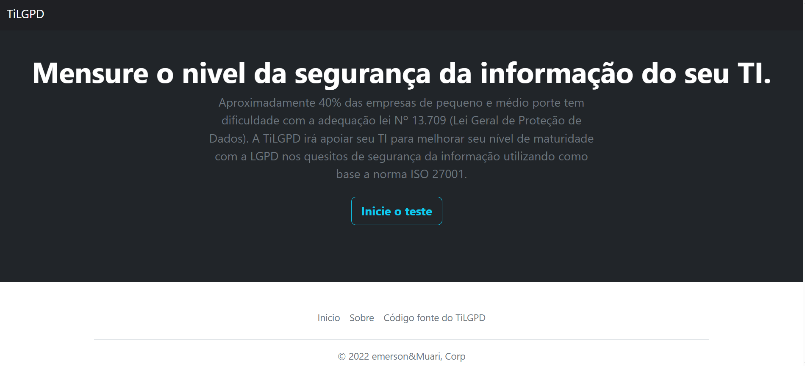

Projetos Pessoais





 Ver código fonte
Ver código fonte
TiLGPD
Meu primeiro projeto web, desenvolvido para o meu TCC: uma ferramenta para auxiliar equipes de TI na adequação à LGPD com padrões ISO 27001.
Stacks:

Notes
Uma ferramenta simples de notas, estilo post-it, para organizar suas ideias rapidamente.
Ver código fonte
FavChamps
Uma ferramenta para organizar meus campeões favoritos no jogo League of Legends.
Ver código fonte
Landing page para Ellen Grous
Uma landing page para exibir os projetos de geoprocessamento da Ellen Grous.
Ver código fonte